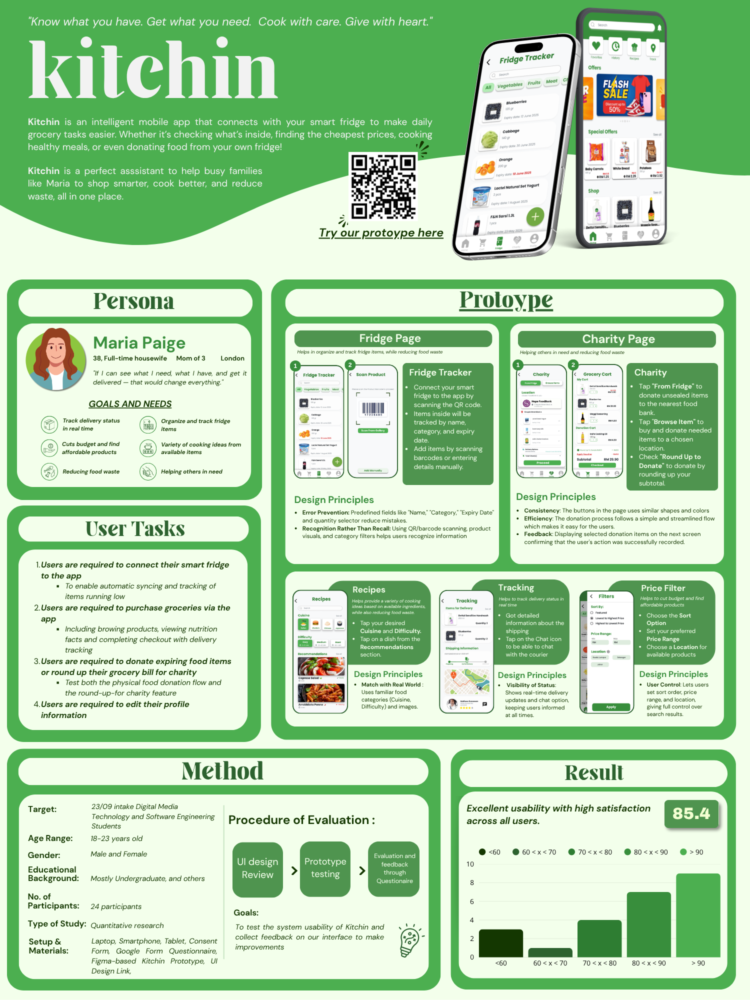

Keep track of the fridge
The proposed fridge flow connects through a QR code, with items organised by category and expiry date. Products can be added by barcode or entered manually.
A mobile app concept for less food waste.
A little less waste.
A little more care.

Loading the phone walkthrough…
The app moves through a recipe flow automatically. Original screens from the Figma prototype.
Kitchin brings grocery shopping, fridge tracking, recipes and food donations into one mobile app concept.
Designed for busy households, it helps people see what they already have, decide what to cook and buy what is missing. A donation flow offers another way to use food before it goes to waste.
This project explores those ideas through interface design, an interactive Figma prototype and a usability evaluation.
The main flows support the small decisions that happen around food every day.
The proposed fridge flow connects through a QR code, with items organised by category and expiry date. Products can be added by barcode or entered manually.
Browse by cuisine and cooking difficulty. Recipe details separate available and missing ingredients, then offer a clear set of cooking instructions.
The grocery flow includes product information, price filters, a shopping cart and a delivery-tracking concept.
The charity flow explores donating food from the fridge, purchasing items for a food bank and rounding up a grocery bill to donate.
The project’s research poster reports a usability evaluation with 24 participants aged 18–23, using prototype tasks and a questionnaire.
The reported overall usability score was 85.4. The study used a student sample, so it offers early feedback rather than evidence of how every household would use the app.
Read the original research poster ↗
Try the full prototype, from the welcome screen through the app’s connected flows.
Open Figma prototype Back to my work